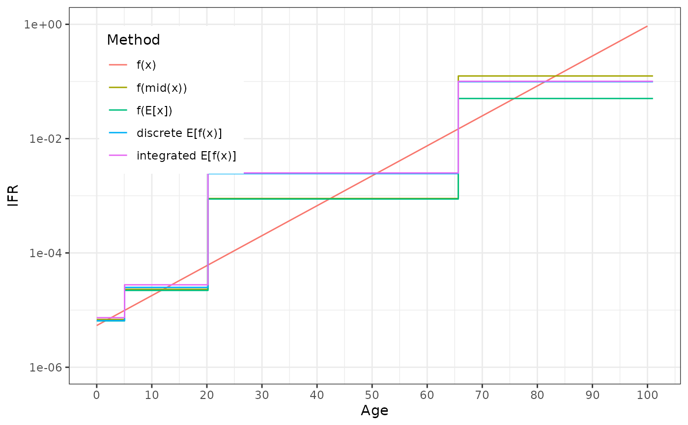

Parameter Calculation Comparison Summary
parameter_summary.RdImplements several approaches to computing partition-aggregated parameters, then tables them up for convenient plotting.
Arguments
- f_param
a function,
f(x)which transforms the feature (e.g. age), to yield the parameter values. Alternatively, adata.framewhere the first column is the feature and the second is the parameter; seexy.coords()for details. If the latter, combined withpars_interp_optsto create a parameter function.- f_pop
like
f_param, either a density function (though it does not have to integrate to 1 like a pdf) or adata.frameof values. If the latter, it is treated as a series of populations within intervals, and then interpolated withpop_interp_optsto create a density function.- model_partition
a numeric vector of cut points, which define the partitioning that will be used in the model; must be length > 1
- resolution
the number of points to calculate for the underlying
f_paramfunction. The default 101 points means 100 partitions.
Value
a data.table, columns:
model_category, a integer corresponding to which of the intervals ofmodel_partitionthexvalue is inx, a numeric series from the first to last elements ofmodel_partitionwith lengthresolutionmethod, a factor with levels:f_val:f_param(x)f_mid:f_param(x_mid), wherex_midis the midpoint x of themodel_categoryf_mean:f_param(weighted.mean(x, w)), wherewdefined bydensitiesandmodel_categorymean_f:weighted.mean(f_param(x), w), same as previouswm_f: the result as if having usedparamix::blend(); this should be very similar tomean_f, though will be slightly different sinceblendusesintegrate()
Examples
# COVID IFR from Levin et al 2020 https://doi.org/10.1007/s10654-020-00698-1
f_param <- function(age_in_years) {
(10^(-3.27 + 0.0524 * age_in_years))/100
}
densities <- data.frame(
from = 0:101,
weight = c(rep(1, 66), exp(-0.075 * 1:35), 0)
)
model_partition <- c(0, 5, 20, 65, 101)
ps_dt <- parameter_summary(f_param, densities, model_partition)
ps_dt
#> model_category x method value
#> <int> <num> <fctr> <num>
#> 1: 1 0.00 f_val 5.370318e-06
#> 2: 1 1.01 f_val 6.066302e-06
#> 3: 1 2.02 f_val 6.852484e-06
#> 4: 1 3.03 f_val 7.740553e-06
#> 5: 1 4.04 f_val 8.743715e-06
#> ---
#> 501: 4 96.96 wm_f 1.006082e-01
#> 502: 4 97.97 wm_f 1.006082e-01
#> 503: 4 98.98 wm_f 1.006082e-01
#> 504: 4 99.99 wm_f 1.006082e-01
#> 505: 4 101.00 wm_f 1.006082e-01
ggplot(ps_dt) + aes(x, y = value, color = method) +
geom_line(data = \(dt) subset(dt, method == "f_val")) +
geom_step(data = \(dt) subset(dt, method != "f_val")) +
theme_bw() + theme(
legend.position = "inside", legend.position.inside = c(0.05, 0.95),
legend.justification = c(0, 1)
) + scale_color_discrete(
"Method", labels = c(
f_val = "f(x)", f_mid = "f(mid(x))", f_mean = "f(E[x])",
mean_f = "discrete E[f(x)]", wm_f = "integrated E[f(x)]"
)
) +
scale_x_continuous("Age", breaks = seq(0, 100, by = 10)) +
scale_y_log10("IFR", breaks = 10^c(-6, -4, -2, 0), limits = 10^c(-6, 0))
#> Warning: Removed 1 row containing missing values or values outside the scale range
#> (`geom_line()`).
